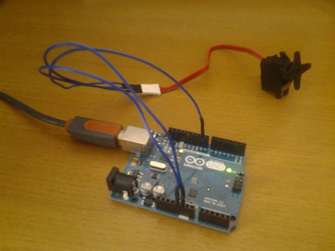

arduino-lock-door
An arduino program to control the lock of a door (open and close).
- It controls a servomotor attached to a lock.
- It listens at serial port for commands "open" and "close".

Video example:
Project:
Link to the project "MatoLock" (Nürnberg, Germany) Here was the project used to control a fridge door.